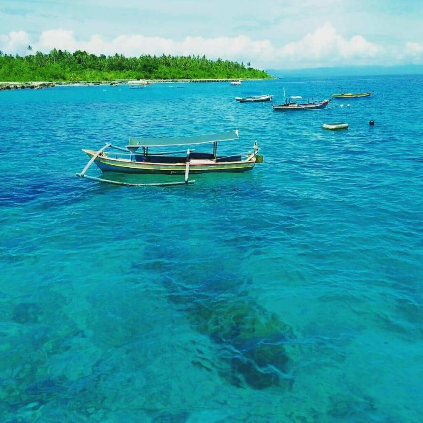

KABUPATEN NIAS BARAT, Sumatera Utara
Kepulauan Hinako adalah salah satu diantara pulau terluar di Indonesia yang mempunyai keindahan alam yang begitu mempesona serta mengagumkan. Pulau nan indah serta masih alami ini terdapat di Kecamatan Sirombu, Kabupaten Nias Barat, Sumatera Utara atau terdapat di pesisir barat Pulau Nias yang berhadapan dengan Samudra Hindia.
Selain Pulau Hinako. di kawasan ini masih terdapat 8 Pulau kecil lainnya yang juga memiliki keindahanyang berbeda satu dengan yang lain,yaitu Pulau Bogi. Pulau Bawa. Pulau Asu. Pulau lmana, Pulau Heruanga, Pulau Hamutala serta Pulau Langu yang semuanya pantainya berpasir putih bersih, lembut serta indah.
Di Kepulauan Hinako berbagai aktifitas wisata bisa dilakukan seperti berenang, berjemur matahari. bersantai.memancing, diving dan surfing terlebih di Pulau Asu serta Pulau Bawa yang mempunyai ombak mencapai 6 meter. Banyak wisatawan pengagum surfing datang ke kepulauan ini untuk menikmati tantangan ombak Samudra Hindia yang besar tinggi serta panjang bergelombang.
Selain memiliki ombak yang besar. perairan Kepulauan Hinako juga menyimpan keindahan dunia bawah laut yang juga menarik, seperti terumbu karang yang masih terjaga kelestariannya dengan berbagai jenis biota lout lainnya.Pulau Asu serta Pulau Bogi, terdapat spot snorkeling dan divingdengan pemandangan terumbu karang yang sangat indah.Pengunjung dapat juga beraktivitas fishing atau memancing.
sumber: disbudpar.sumutprov.go.id, sportourism.id